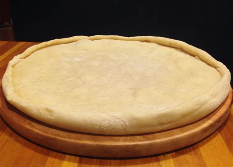

Massa de Pizza (Portuguese-BR)

Descrição
Massa de farinha de trigo para preparação de pizzas. Rende duas massas médias para formas de aproximadamente 35 cm de diâmetro.
Ingredientes
- 20 g de fermento biológico seco;
- 41 g de açúcar (50 ml);
- 120 ml de água morna;
- 510 g de farinha de trigo (850 ml);
- 8 g de sal (7,5 ml);
- 2 ovos;
- 50 ml de azeite de oliva.
Procedimento
- Dissolver o fermento e o açúcar na água morna;
- Deixar descansar por dez minutos;
- Juntar 375 g (625 ml) de farinha de trigo e os demais ingredientes;
- Homogeneizar a massa acrescentando a farinha de trigo restante aos poucos;
- Separar em duas porções e deixar descansando por uma hora;
- Abrir as massas e colocá-las em formas untadas. As massas estarão prontas para serem recheadas e levadas ao forno.